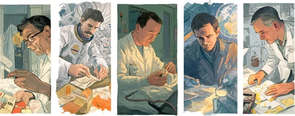

The best innovations don’t come from unlimited budgets and perfect conditions. They come from people who hit a wall and refused to stop.

In 1943, Lockheed was given six months to design and build a jet aircraft to compete with German advancements. The team had limited access to the new engine technology, almost no space, and ended up working out of a circus tent. They delivered the P-80 Shooting Star on time. It flew safely. The impossible deadline became aviation history.
In 1997, Philippe Kahn’s wife went into labor. He wanted to share a photo of his newborn daughter with family and friends. The problem? Phones couldn’t send photos. The technology didn’t exist. So between contractions, Kahn wrote custom software, built a homemade data cable, and sent the first photograph ever transmitted from a mobile device. Not a product demo. A picture of his daughter.
In 1970, an oxygen tank exploded on Apollo 13. The crew needed the Command Module’s CO₂ filters to survive, but they were square. The Lunar Module’s receptacles were round. NASA engineers on the ground had one option: build an adapter using only what the astronauts had on board. Plastic bags. Cardboard. Duct tape. They saved three lives with materials you could find in a garage.
In the early 1900s, an anonymous factory worker at Swan Vesta walked into a boardroom with a simple idea: stop putting sandpaper on both sides of the matchbox. One side works just as well. That single suggestion — from someone the company had probably never noticed — saved millions.
In 2008, Tesla couldn’t source the large battery packs they needed for an electric car. So they wired together thousands of small laptop batteries instead. The workaround became a breakthrough: lighter, cheaper, safer, and over 200 miles of range.
In 2007, two roommates couldn’t make rent. A design conference had filled every hotel in San Francisco. They inflated air mattresses and charged strangers $80 a night to sleep on their floor. That desperation became Airbnb.
But here’s the one that changed everything we take for granted.
In 1882, candles on Christmas trees were burning houses down. It was tradition, and it was deadly. Thomas Edison had just invented the light bulb, but it was his partner, Edward Johnson, who saw the real opportunity. He hand-wired 80 red, white, and blue bulbs, strung them around his tree in New York City, and invited the press. They called it a “publicity stunt.” It became the safest, most beloved decoration in the world.
None of these people waited for permission. None of them had a blueprint. They saw something that didn’t work and refused to leave it that way.
Even the calendar we use to mark the new year exists because someone refused to accept that time itself was broken. In 46 BC, Julius Caesar looked at a Roman calendar completely out of sync with the sun and said: we can fix this. He established January 1 as the start of the year — named for Janus, the god who looks both backward and forward.
As we enter 2026, what limitation are you facing that might actually be an invitation?
What problem would you refuse to walk away from?